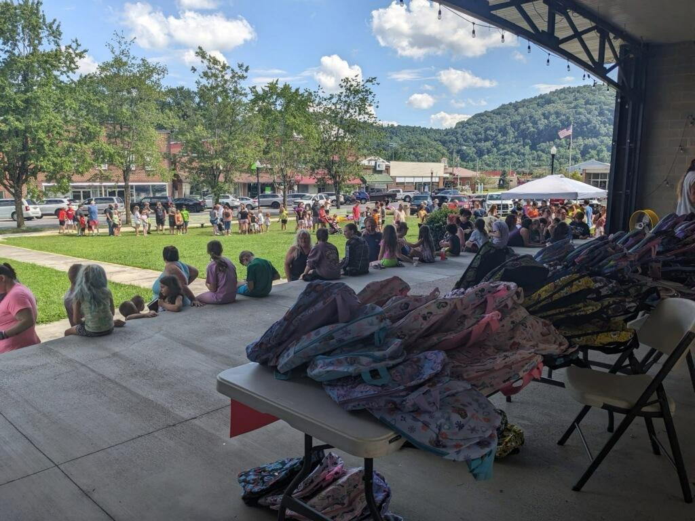
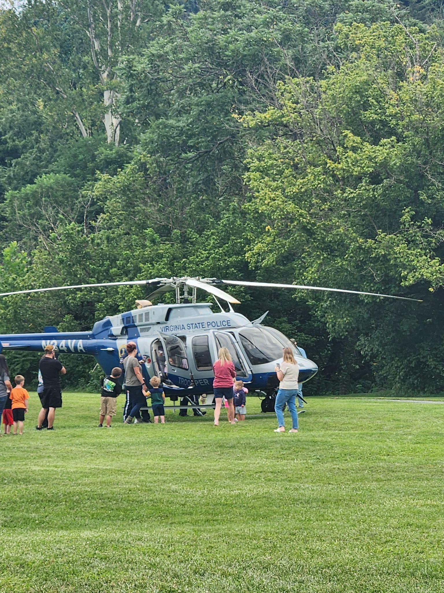
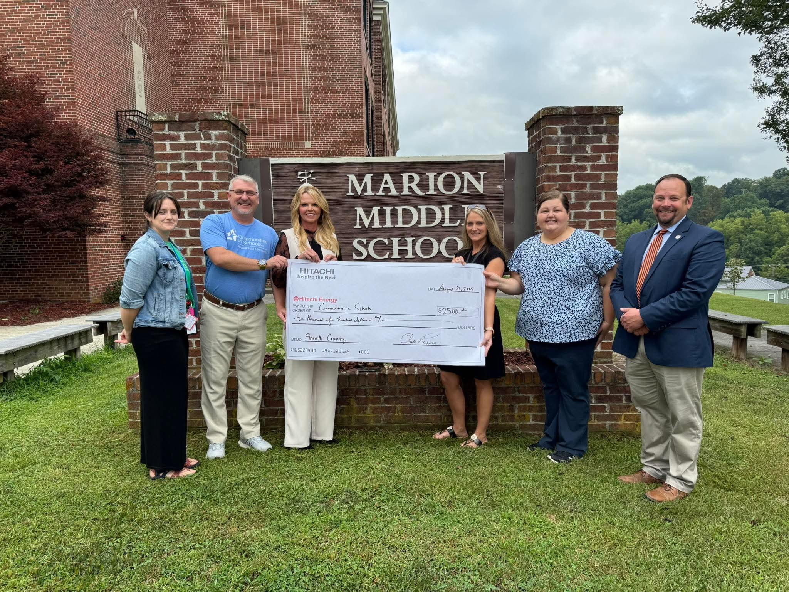
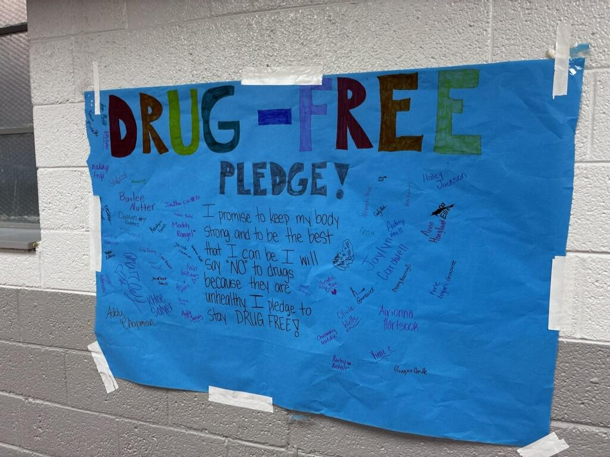

Cohort 2 📍 Region 7
In Smyth County, substance use is a reality across the school division's communities, and Smyth's five Community Schools are building prevention programming that meets students where they are. Each school is shaping its approach around its own students and families, from Narcan training offered to families at a community parade at Marion Middle to a fishing trip with Hooked on Fishing Not Drugs for Chilhowie Middle students.
Smyth County recognized that prevention programming is most effective when it serves the whole student. Every school provides a clothing closet, food pantry, and calming space, and an in-school clinic that brings physical and mental health services into the building. Individual counseling and mental health support are part of the school day, connecting students to the care they need through the people and places they already trust.




Across five schools, coordinators built programming shaped by local need. At Northwood Middle, a back-to-school supply giveaway drew families from across the Saltville community. At Chilhowie High, a Virginia State Police helicopter visit brought students face to face with law enforcement partners working alongside the school. At Marion Middle, Hitachi Energy invested $7,500 in the community school. And at Northwood High, students put their names on a drug-free pledge displayed in the school hallway.
Community Engagement Across Smyth County This Fall
15 events | 1,132 attendees | 35 partners